3 months
Case study
Team Cymru Website Redesign
The Team Cymru site had grown around internal knowledge: useful to people who already understood the organization, harder for new visitors to enter. The work behind it was serious intelligence and security work, but the site made people assemble that story themselves. I led the redesign from content inventory and information architecture through wireframes and final visual design.
tl;dr
- The legacy site reflected internal structure more than visitor intent.
- A full content inventory gave the redesign an honest view of what existed, what was outdated, and what needed a clearer home.
- Card sorting showed that people grouped content by task, not by the company's product or team structure.
- Stakeholder whiteboard sessions helped settle the page model before visual design began.
- The final direction used strong photography, dark editorial framing, and clearer page types to make the company feel as serious as the work behind it.
The Process
A Serious Company With a Hard-to-Enter Site
The legacy site carried years of accumulated content. Its structure made sense if you knew the company from the inside, but it made first-time visitors work too hard. Navigation followed departments and product language. The homepage leaned on jargon. The visual system felt dated next to the sophistication of the work.
The issue was not simply aesthetics. Visitors needed to understand what Team Cymru did, who it helped, and where to go next. That meant the redesign had to begin with structure, not surface.
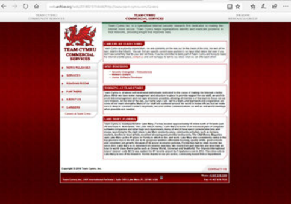
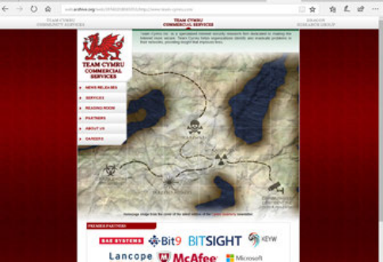
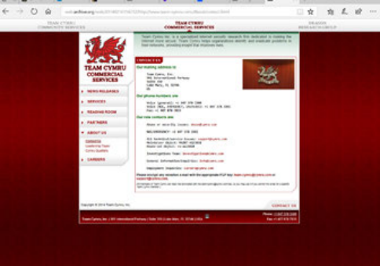
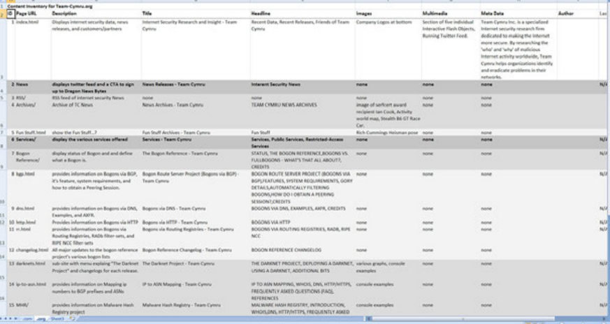
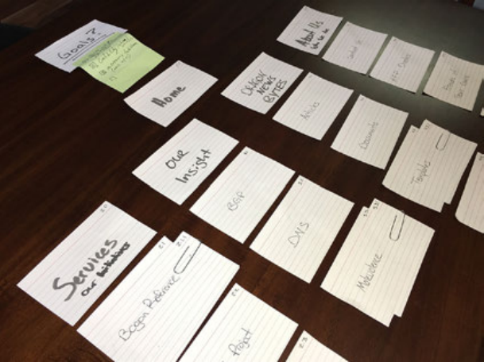
Inventory Before Architecture
I started by cataloging the site: every page, section, and content type, with notes on what stayed current, what repeated, and what had lost its purpose.
Then the team used card sorting to group major content by how people expected to find it. The result was more task-oriented than org-oriented. Products, services, news, and contact paths needed to be easier to reach than internal department boundaries.
That gave the IA a reason beyond taste. The new navigation reflected how people looked for information, which made stakeholder conversations more concrete.
Sketch Together, Then Refine
Early layout work happened on whiteboards with stakeholders present. Rough sketches made the conversation faster and less precious. A weak idea could be discarded immediately; a useful one could be refined while everyone still had the same context.
Those sessions shaped the homepage, product pages, service pages, and blog structure before the design moved into formal wireframes. The direction that held was clear: lead with the value proposition, surface products directly, and make the site's depth easier to scan.
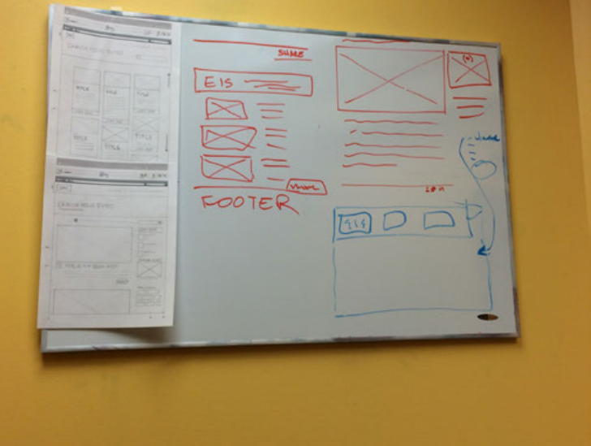
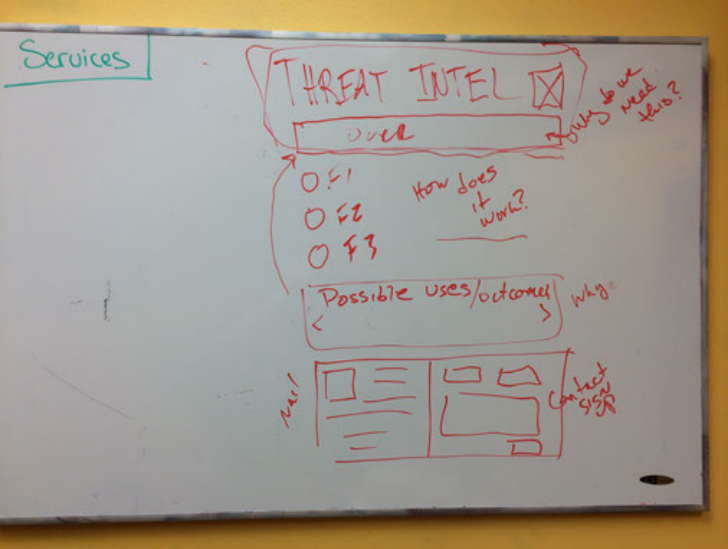
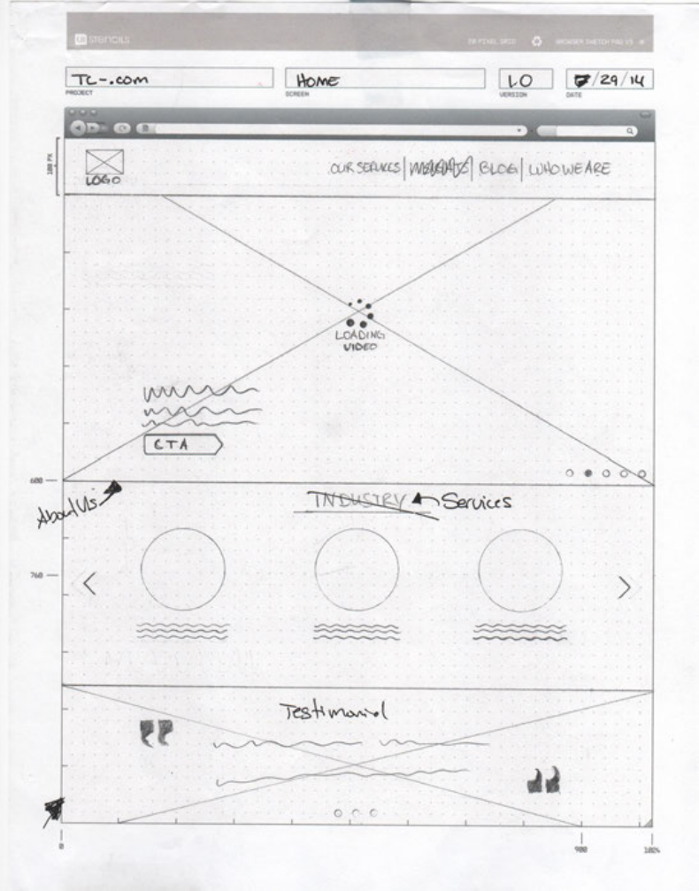
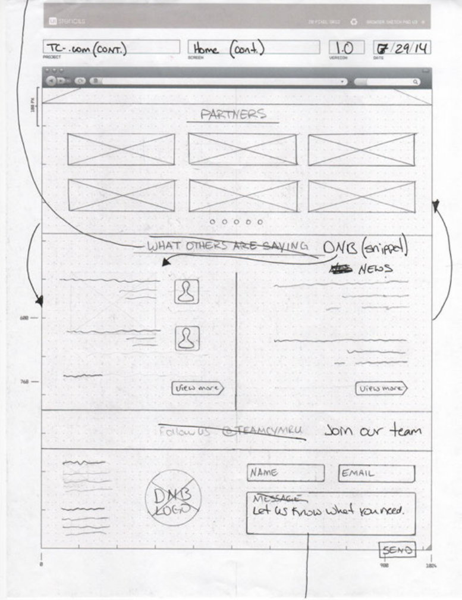
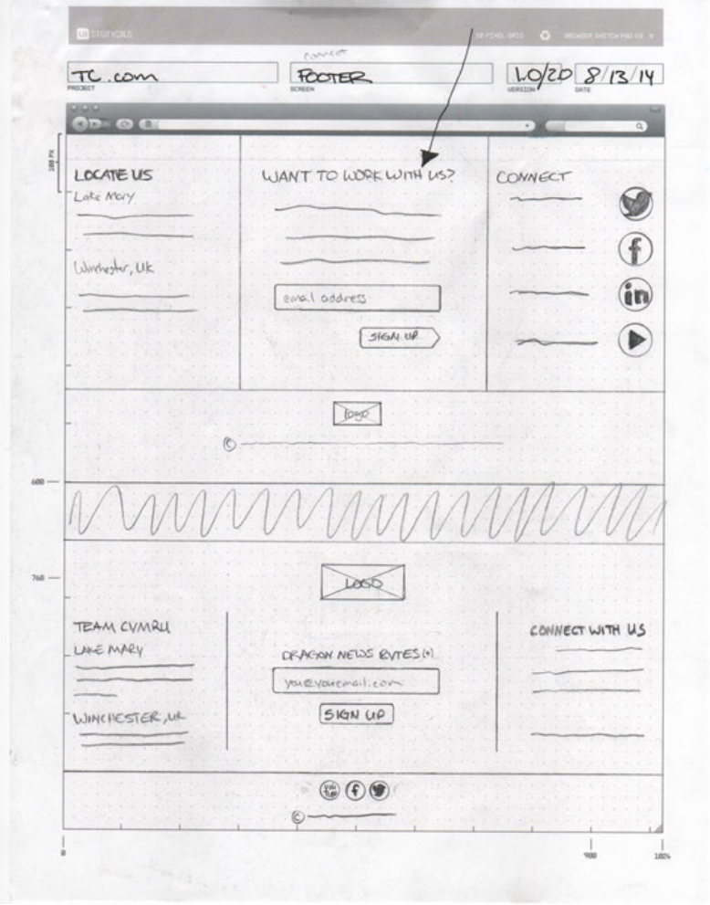
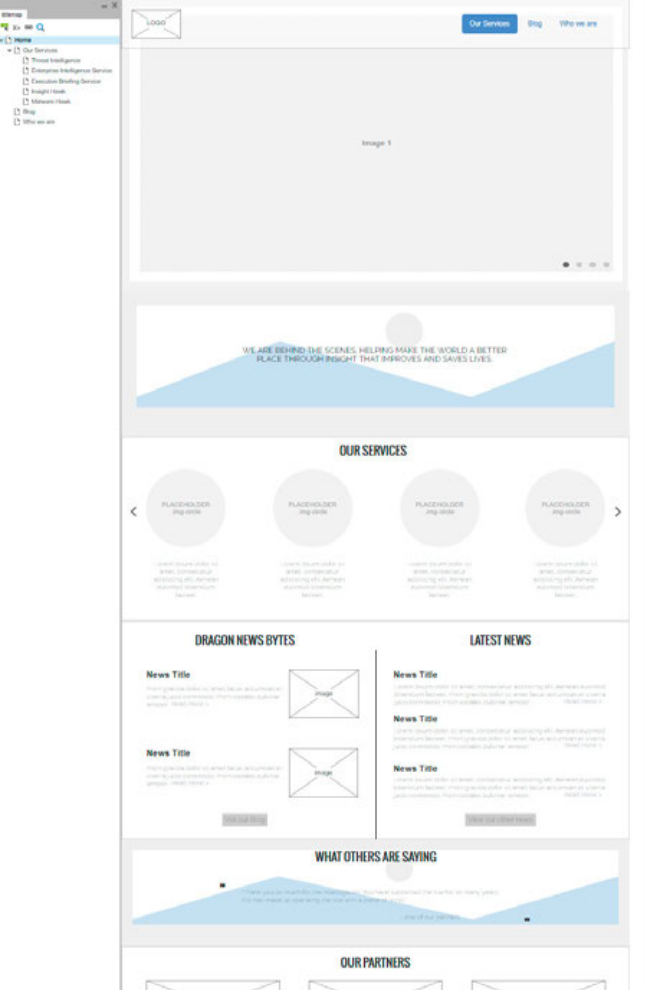
Outcome
Scroll preview
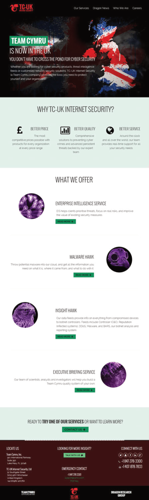
Make the Work Feel Legible and Serious
The final direction used high-contrast photography and a near-black foundation to create immediate authority. The hawk imagery gave the site a recognizable visual motif, while the restrained palette helped the content feel more focused.
Each page type had a job. The homepage introduced the company. Product pages gave individual offerings a stronger hero and clearer hierarchy. Dragon News used a cleaner publishing model. Service pages communicated depth without making visitors hunt for the main point.
Scroll preview
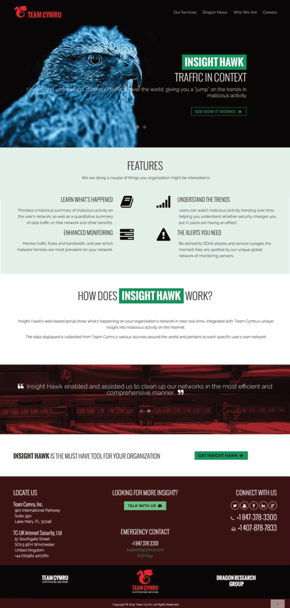
Scroll preview
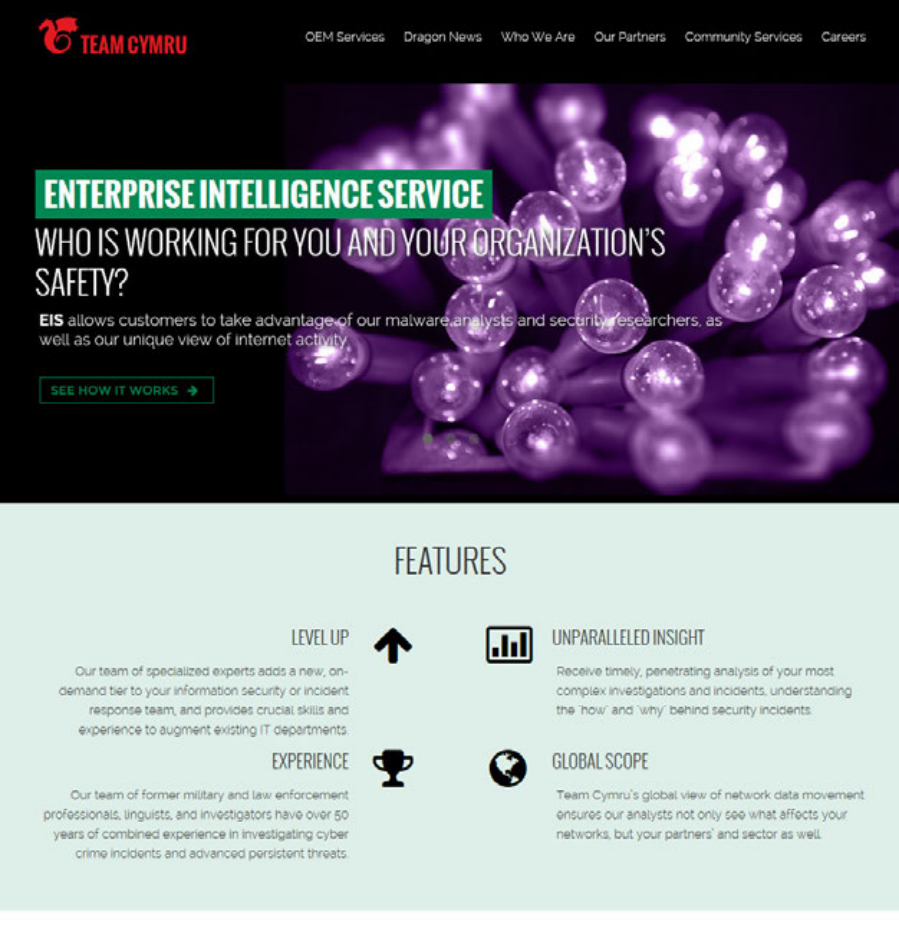
Scroll preview
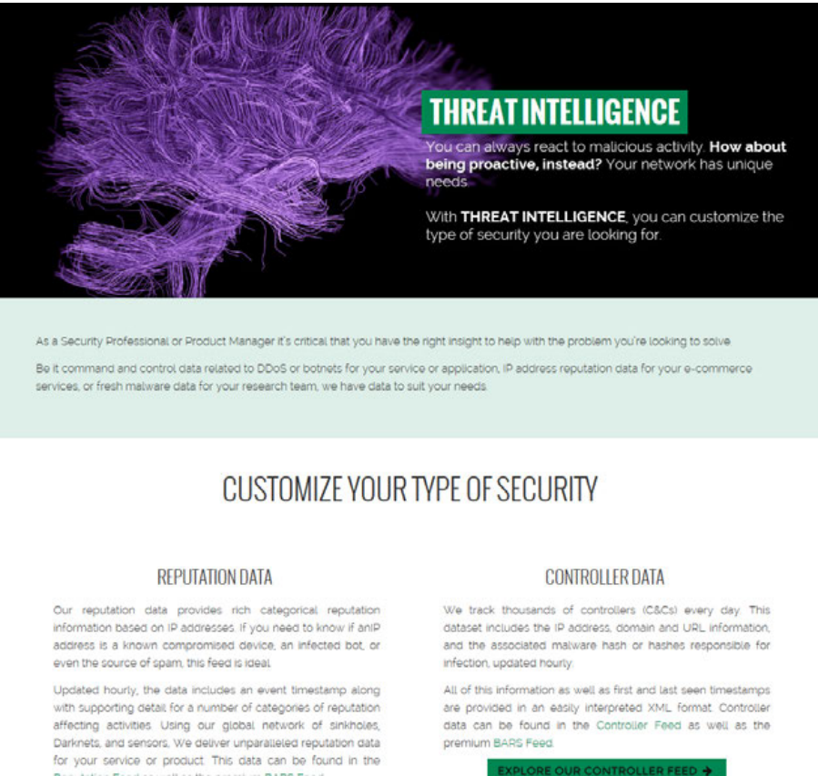
Scroll preview
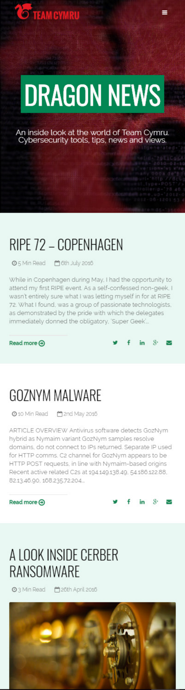
The redesign gave Team Cymru a site that better matched the work it was doing. It no longer asked visitors to decode the organization before understanding the value.
The process also made the work easier to defend. Content inventory, card sorting, whiteboard sketches, and wireframes gave each major decision a visible reason, which reduced subjective debates once the visual design came together.
What the process produced
- Navigation organized around visitor tasks, not internal structure.
- A visual language with enough authority for an intelligence and security brand.
- Distinct page types for homepage, product, service, and publishing content.
- A clearer introduction to the company for people arriving without context.
Continue Exploring
Contact
Want to talk through the Team Cymru site redesign?
I can walk through the content strategy, navigation decisions, or how the visual system came together.
A good conversation is usually the best start.